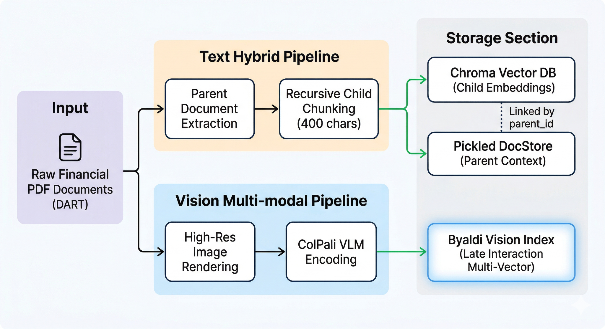
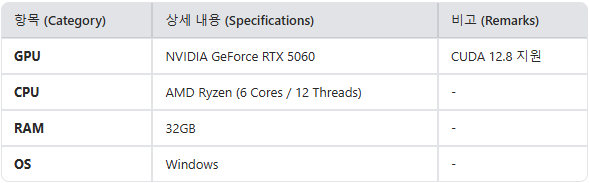
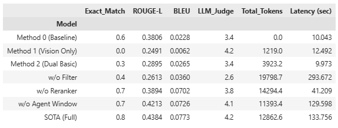
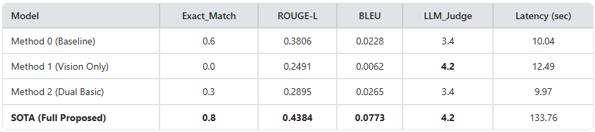
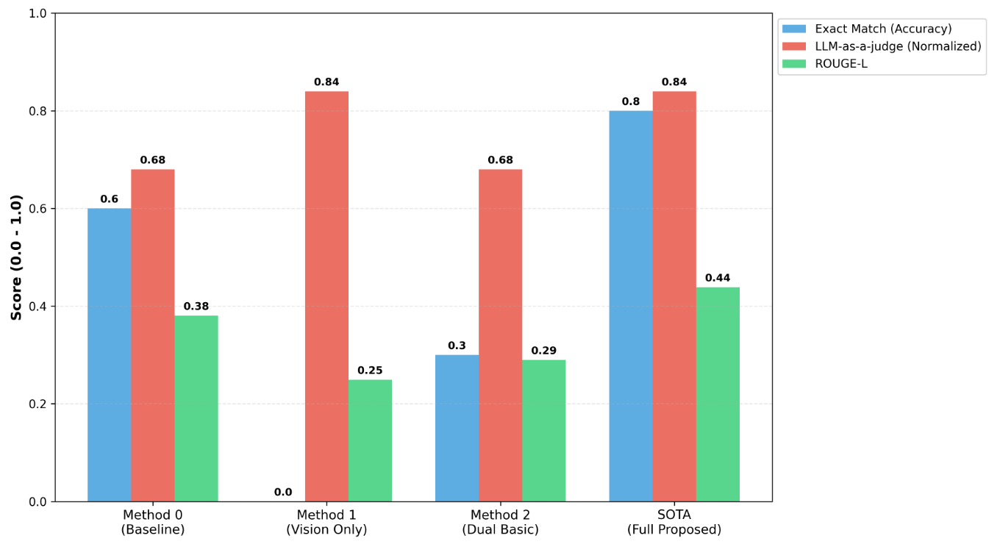
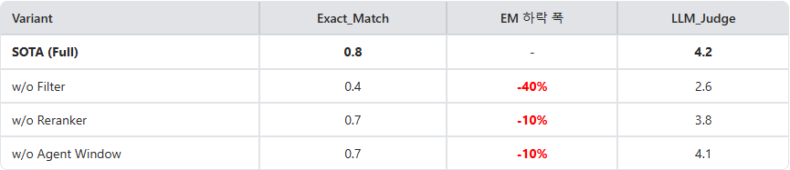
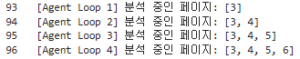
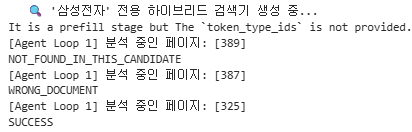

Final Report
Intelligent Query Routing 및 Vision Self-Correction Agent를 활용한 금융 RAG 시스템
요약 (Summary)
본 프로젝트는 금융감독원 전자공시시스템(DART)의 방대한 PDF 보고서 내에서 텍스트와 복잡한 표 데이터를 정밀하게 추출하기 위한 'Intelligent Routing 기반 Hybrid Corrective Agent' 시스템을 구축하였습니다. 기존 제안서에서 제시한 3가지 방법론을 넘어, Neural Reranker와 최신 비전 기반 검색 모델인 ColPali를 결합한 SOTA(Method 3) 아키텍처를 최종적으로 구현하였습니다. 이를 통해 단순 RAG의 한계인 의미적 동질화와 표 구조 파괴 문제를 해결하였으며, 실험 결과 기본 RAG(EM 0.6) 대비 비약적으로 상승한 EM 0.8 및 LLM-as-a-judge 4.2점을 달성하였습니다. 또한, 에이전트의 Self-Correction 기능을 통해 질문이 요구하는 데이터가 다음 페이지로 이어지는 경우를 처리하는 동적 확장 로직의 유효성을 검증하였습니다.
Keywords Agentic RAG, Multimodal LLM, Intelligent Routing, Hybrid Retrieval
1. 서론 (Introduction)
기업의 재무 건전성과 경영 성과를 판단하는 핵심 지표인 사업보고서는 대개 수백 페이지에 달하는 방대한 비정형 데이터로 구성되어 있습니다. 그러나 기존의 단순 RAG(Retrieval-Augmented Generation) 시스템은 두 가지 심각한 결함을 보였습니다. 첫째, '연결 현금흐름표', '당기순이익'과 같이 모든 기업이 공통으로 사용하는 재무 용어의 의미적 동질화 현상으로 인해, 타 기업의 문서를 오탐지하여 Retrieval Slot을 낭비하는 현상이 발생합니다. 둘째, Chunking 과정에서 복잡한 표의 구조가 파괴되어 Hallucination 현상을 야기합니다.
본 프로젝트는 이러한 문제를 해결하기 위해 고해상도 시각 추론 능력을 갖춘 Gemini 3.1 Flash Lite를 핵심 엔진으로 채택하였습니다. 목표는 사용자의 질문 의도를 선제적으로 파악하여 관련 데이터만을 정밀하게 필터링하고, Vision Agent를 통해 누락된 정보를 실시간으로 탐색하는 'Intelligent Loop'를 완성하는 것입니다. 최종 결과물은 단순한 정보 검색을 넘어, Neural Reranking을 통해 검색 품질을 극대화한 금융 지원 에이전트를 지향합니다.
이러한 기술은 금융 산업 전반에 걸쳐 높은 실용성을 제공합니다. 자산 운용사나 증권사의 분석가들은 수만 페이지의 공시 자료를 전수조사하는 과정에서 소모되는 시간을 줄일 수 있으며, 사람이 놓치지 쉬운 미세한 수치 변화까지 정밀하게 포착할 수 있습니다. 또한 본 시스템을 활용해 기업에 관한 정보를 빠르게 파악하여 의사 결정의 객관성을 확보하고 운영 리스크를 최소화하는 데 기여할 수 있을 것으로 기대됩니다.
2. 작업 정의 (Task Formulation)
2.1. 전체 시스템 구조: 4단계 에이전틱 파이프라인
본 프로젝트는 제안서의 3단계 구조를 확장하여, 검색 결과의 품질을 보장하기 위한 'Neural Reranking' 단계가 추가된 4단계 파이프라인으로 고도화되었습니다.
- Step 0 (Intelligent Query Router): 질문에서 타겟 기업을 추출하여 검색 범위를 런타임에 고정함으로써 오탐지를 방지합니다.
- Step 1 (Dual-Path Retrieval): Path A (Text): BM25와 Vector 검색을 융합하여 텍스트 맥락을 포착합니다. Path B (Vision): 단순 이미지 렌더링 방식에서 ColPali(Vision-Language Model) 기반 인덱싱 방식으로 고도화하여 시각적 특징 기반 검색의 속도와 정확도를 개선했습니다.
- Step 1.5 (Neural Reranking): BAAI/bge-reranker-v2-m3 모델을 활용하여 검색된 후보군 중 질문과 가장 관련성이 높은 상위 K개의 페이지를 재정렬합니다.
- Step 2 (Agentic Visual Reasoning): Gemini 모델이 선정된 페이지 이미지를 분석하여 문서의 진위 여부를 확인하고, 표가 잘린 경우 'MAX_EXPANSION' 범위 내에서 다음 페이지를 동적으로 추가 호출합니다.

2.2. 에이전트 판단 및 Self-Correction 로직
에이전트는 단순히 답변을 생성하는 것이 아니라, 다음의 자율적 판단을 수행합니다.
- NOT_FOUND_IN_THIS_CANDIDATE: 검색된 페이지에 원하는 항목이 없거나 타 기업의 데이터일 경우 즉시 폐기합니다.
- NEXT_PAGE_NEEDED: 표나 문맥이 하단에서 끊길 경우 자율적으로 탐색 범위를 확장합니다. 본 기능은 특히 '연구개발비'나 '주석 섹션' 같이 여러 페이지에 걸친 복잡한 데이터 분석에 핵심적인 역할을 수행했습니다.
- Stopping Criteria: 무한 루프나 과도한 토큰 소모를 방지하기 위해 최대 확장 페이지 수(MAX_EXPANSION = 3)를 설정하였습니다. 탐색 범위가 임계값에 도달할 때까지 정답을 찾지 못할 경우, 에이전트는 즉시 NOT_FOUND_IN_THIS_CANDIDATE로 상태를 전이하며 루프를 종료하는 로직을 갖추고 있습니다.
2.3. 평가 방법 (Evaluation Method & Ablation Study)
본 프로젝트의 유효성을 객관적으로 증명하기 위해 다음과 같은 평가 체계를 구축하였습니다.
- 성능 측정 (Metrics): 정답 수치와의 일차율을 측정하는 Exact Match(EM)를 주 지표로 하며, 답변의 질적 우수성을 위해 ROUGE-L, BLEU, 그리고 LLM-as-a-judge (1-5점 만족도) 점수를 종합적으로 활용합니다.
- 정량적 평가 (Quantitative Evaluation): 베이스라인(Method 0) 대비 제안 시스템(SOTA)의 성능 변화를 측정합니다. 특히 Ablation Study를 통해 Intelligent Routing, Neural Reranker, Vision Agent의 Sliding Window 기능을 각각 제거했을 때 발생하는 성능 하락 폭을 분석하여 각 모듈의 기여도를 정량화합니다.
- 정성적 평가 (Qualitative Evaluation): Case Study를 통해 에이전트가 특정 페이지에서 왜 확장을 결정했는지, 혹은 왜 필터링을 수행했는지에 대한 논리적 타당성을 분석하고 실패 사례(Edge Case)를 수집하여 원인을 규명합니다.
3. 데이터 선정 (Dataset)
3.1 데이터셋 소스 및 구성
- 소스: DART(전자공시시스템)를 통해 수집한 국내 상장사의 정기공시(사업보고서) PDF.
- 데이터 규모: 기업별 평균 300~600페이지 분량의 비정형 데이터.
- 특징: 재무상태표, 손익계산서 등 대규모 표와 이를 설명하는 수백 페이지의 주석 섹션 포함.
3.2 전처리 및 활용 방식
- Metadata Injection (텍스트): PyMuPDFLoader를 통해 텍스트 분할(Chunking) 시, 각 조각 선두에 [문서: 파일명, 페이지 번호] 메타데이터를 강제 주입하여 벡터화 과정에서의 맥락 상실을 방지합니다.
- High-Res Rendering (비전): PyMuPDF(fitz)를 활용하여 에이전트 검증 대상 페이지를 2.0 배율(Matrix)의 무손실 고해상도 이미지(Base64)로 동적 렌더링합니다.
- Dynamic Pool Update: 특정 폴더 내 PDF 파일명 규칙(정규식)을 바탕으로 라우팅 대상 기업 풀(Pool)을 런타임에 자동 갱신하는 확장형 파이프라인 구축합니다.
3.2. 데이터베이스 아키텍처 및 시스템 연동 (Database Architecture)
본 시스템은 정밀한 데이터 검색과 문맥 보존을 위해 이중 경로 인덱싱(Dual-Path Indexing) 구조를 채택하고, 이를 지능형 라우터와 유기적으로 결합했습니다.

Text Hybrid Path
- Parent-Child 구조: 문서를 400자 내외의 작은 조각(Child)으로 나누어 검색의 민감도를 높이는 동시에, 검색 성공 시에는 실제 문맥이 포함된 페이지 전체(Parent)를 에이전트에 전달합니다. 이는 단순 RAG의 고질적 문제인 '문맥 단절'을 아키텍처 레벨에서 해결한 설계입니다.
- Ensemble Retrieval: BM25(키워드)와 Semantic(의미) 검색 결과를 5:5 비율로 융합하여 정량적 키워드와 정성적 맥락을 동시에 포착합니다.
Vision Multi-modal Path
- ColPali 기반 Late Interaction: PDF의 각 페이지를 고해상도 이미지 벡터로 인덱싱합니다. 텍스트 추출 시 손실되기 쉬운 표의 선(Grid), 폰트 강조, 셀 병합 구조 등 시각적 레이아웃 정보를 온전히 보존하여 비전 에이전트의 판단 근거로 제공합니다.
System Integration
- Runtime MetaData Filtering: Intelligent Router가 질문에서 추출한 기업명을 기반으로, 검색 시점에 해당 기업의 source 태그만을 추적하도록 Dynamic Filtering을 수행합니다. 이를 통해 수만 페이지의 DB 내에서도 타 기업 데이터의 간섭을 원천 차단합니다.
4. 모델 선정 (Model)
4.1. 모델 선정 (Model Selection)
정확도와 응답 속도를 확보하기 위해 각 모듈별로 최적의 기술 스택을 선정하였습니다.
- Main model: Gemini 3.1 Flash Lite
선정 이유: Agentic Loop를 수행해야 하는 시스템 특성상, Low Latency과 비용 효율성이 필수적입니다. 또한, 별도의 OCR 없이 이미지 내의 표 구조를 직접 이해하는 강력한 Native Multimodality를 갖추고 있어 Vision Agent의 컨트롤러로 최적인 모델입니다. - Text Embedding model: jhgan/ko-sroberta-multitask
선정 이유: 한국어 문장 간 의미적 유사도 측정에 특화된 SBERT 기반 모델로, 금융 용어가 포함된 한국어 질의응답에서 안정적인 검색 성능을 제공합니다. 가벼운 모델 크기 덕분에 인덱싱 및 검색 과정의 부하를 최소화합니다. - Neural Reranker model: BAAI/bge-reranker-v2-m3
선정 이유: 금융 보고서는 '연결재무상태표', '영업이익' 등 기업 간 중복되는 제목이 많아 초기 검색(Bi-Encoder) 단계에서 Semantic Homogeneity 문제가 발생합니다. 이를 해결하기 위해 질문과 문서를 직접 대조하는 Cross-Encoder 방식인 BGE reranker를 도입하여 상위 K개의 정합성을 획기적으로 개선했습니다. - Vision Retrieval: ColPali
선정 이유: 전통적인 텍스트 추출 파이프라인은 PDF의 시각적 구조(표의 레이아웃 등)를 상실합니다. ColPali는 Late Interaction 기법을 Vision Language Model에 적용하여, 이미지 자체에서 시각적 특징을 인덱싱합니다. 이를 통해 표의 선이나 레이아웃 정보를 보존한 채 검색함으로써 텍스트 기반 검색의 한계를 보완합니다.
4.2. 실험 및 분석 방법 (Experiment & Analysis Method)
본 프로젝트는 제안하는 시스템의 유효성을 객관적으로 증명하기 위해, 동일한 10개의 고난도 재무 질의를 바탕으로 시스템의 각 모듈이 성능에 미치는 영향을 분석하는 Ablation Study를 포함한 총 7가지 모델 변체를 비교 실험합니다.
- Method 0 (Baseline): 가장 기본적인 텍스트 기반 하이브리드 RAG 모델입니다.
- Method 1 (Vision Only): 텍스트 정보 없이 ColPali 기반의 이미지 검색 결과만으로 답변을 생성하는 실험군입니다.
- Method 2 (Dual Basic): 텍스트와 비전 검색 결과를 단순 결합하되, 에이전트 루프나 자가 피드백 없이 1회성으로 답변을 생성합니다.
- w/o Filter (Ablation): SOTA 모델에서 Intelligent Query Router를 통한 기업명 사전 필터링 기능을 제거하여, 타 기업 문서의 간섭으로 인한 검색 노이즈의 영향을 측정합니다.
- w/o Reranker (Ablation): SOTA 모델에서 Neural Reranker를 제거하여, 단순 키워드/임베딩 기반 초기 검색 결과만으로 에이전트 루프를 실행했을 때의 정확도를 측정합니다.
- w/o Agent Window (Ablation): SOTA 모델에서 에이전트의 Sliding Window(페이지 확장) 기능을 제거하여, 단일 페이지 내 정보만으로 복잡한 표 데이터를 처리할 수 있는지 검증합니다.
- SOTA (Full Proposed): 본 프로젝트에서 제안하는 통합 모델로, Pre-filtering + Neural Reranking + Agentic Vision Feedback + Window Expansion이 모두 결합된 최종 형태입니다.
위 실험군 간의 Exact Match(EM)와 LLM_Judge 점수 비교를 통해 각 기술적 요소가 금융 데이터 분석의 정합성에 기여하는 바를 총체적으로 분석합니다.
5. 실험 환경 및 결과
5.1. 실험 세팅
하드웨어 인프라: NVIDIA RTX 5060 GPU / 32GB RAM 환경에서 로컬 검색 엔진(Text & Vision Index) 및 Nerual Reranker를 구동하였으며, 추론은 Gemini 3.1 Flash Lite API를 활용했습니다.

평가 데이터셋 (Golden Set): 본 프로젝트의 실효성을 증명하기 위해 DART 공시 문서에서 단순 검색만으로는 해결 불가능한 10개의 고난도 재무 질의를 직접 선별하였습니다
평가 지표:
- Exact Match (EM): 수치와 단위(예: 1,234백만원)가 정답과 100% 일치하는지 측정하는 가장 엄격한 지표입니다.
- LLM-as-a-judge: 정답 수치뿐만 아니라, 답변의 문맥적 정합성과 출처 표기의 정확성을 Gemini 1.5 Pro가 1~5점 척도로 평가합니다.
- Latency & Token Usage: 에이전틱 루프에 따른 운영 비용과 실시간 활용 가능성을 측정합니다.

5.2. 실험 결과 (Metrics & Model Comparison)
본 프로젝트는 Accuracy(Exact Match), ROUGE-L, BLEU, LLM-as-a-judge 지표를 사용하여 모델의 성능을 측정 및 비교하였습니다.

결과 분석: 텍스트 기반 Baseline(0.6) 대비 SOTA 모델이 Exact Match 0.8로 가장 우수한 성능을 보였습니다. 텍스트 정보가 배제된 Vision Only 모델은 기계적 일치(EM)에는 실패했으나, LLM 판정 결과 4.2점이라는 높은 점수를 기록하며 이미지 내 정보 추출의 강력한 잠재력을 입증했습니다. 다만, 성능 향상에 따른 Latency의 대폭적인 증가(약 13배)가 관찰되었습니다. 이는 SOTA 모델이 수행하는 Agentic Loop(페이지 확장 탐색)와 Neural Reranking 과정이 순차적으로 진행됨에 따른 결과이며, 금융 도메인과 같이 처리 속도보다 데이터의 무결성 및 정확성이 압도적으로 중요한 실무 환경에서는 충분히 합리적인 트레이드오프(Trade-off)로 분석됩니다.

5.3. 정량적 분석 결과 (Ablation Study)
모델에 적용된 각 모듈(Intelligent Routing, Neural Reranking, Sliding Window)의 역할과 효과를 확인하기 위해 소거법 연구(Ablation Study)를 진행했습니다.

모듈별 역할 분석:
- Intelligent Routing: 필터링 제거 시 정확도가 40%나 급락한 이유는 금융 문서 특유의 '의미적 동질화(Semantic Homogeneity)' 때문입니다. 수많은 기업 문서가 '연결재무제표', '자본변동표' 등 동일한 섹션 제목을 공유하기 때문에, 기업명을 사전에 고정하지 않으면 벡터 검색기가 타 기업의 유사 페이지를 상위에 노출시키는 노이즈 현상이 발생합니다. Intelligent Routing은 검색 공간(Search Space)을 해당 기업으로만 한정하여 이러한 Entity Hallucination을 원천 차단하는 핵심 장치임을 확인했습니다.
- Neural Reranking: Bi-Encoder 방식의 초기 검색에서 놓친 미세한 문맥을 Cross-Attention 기반의 Neural Score가 보완함으로써 10%의 추가 성능 향상을 이끌어냈습니다. 단순히 키워드가 겹치는 페이지가 아니라, 질문이 요구하는 구체적인 수치(예: '당기'와 '전기'의 구분)와 문서 내용 간의 상관관계를 신경망이 다시 한 번 정밀하게 대조함으로써 최상위 후보 K개의 질적 수준을 보장했습니다.
- Sliding Window: 재무제표는 종종 물리적인 페이지 경계에서 끊기거나 수백 건의 주석이 다음 장으로 이어지는 '데이터 단절(Truncation)' 문제를 안고 있습니다. 페이지 확장 기능이 없을 때 발생한 10%의 하락은 고정된 검색 범위 내에 정답이 존재하지 않을 때 에이전트가 스스로 주변 맥락을 탐색하여 정보를 재구성하는 능력이 복잡한 표 데이터 분석에 필수적임을 입증합니다.
5.4. 정성적 분석 결과 (Case Study)
실제 생성된 답변과 에이전트의 추론 로그를 기반으로 시스템의 유효성을 분석했습니다.
Case 1 (Sliding Window 성공 사례): 사용자가 특정 기업의 '연구개발비'를 질문했을 때, 에이전트가 단일 페이지(p.3)에서 정보가 끊긴 것을 감지하고 스스로 NEXT_PAGE_NEEDED를 호출하여 p.4~6까지 탐색 범위를 확장, 분산된 수치를 모두 합산하여 정확한 최종값을 도출해냈습니다.

Case 2 (Intelligent Routing을 통한 환각 방지): 사명이 유사한 두 기업(삼성SDI, 삼성전자)이 검색 후보에 올랐을 때, 라우터가 질문의 명시적 대상인 '삼성전자'만으로 검색 범위를 런타임에 고정함으로써, 타 기업의 재무 수치를 응답하는 치명적인 오류를 사전에 예방했습니다.

6. 생성 모델 사용
본 프로젝트에서는 생성형 AI를 시스템의 핵심 알고리즘 구현과 개발 효율성 증대라는 두 가지 차원에서 적극 활용하였습니다.
6.1. 시스템 아키텍처 내 활용
Gemini 3.1 Flash Lite를 단순한 텍스트 생성기가 아닌, 전체 파이프라인의 Agent Controller로 활용했습니다.
- Intelligent Query Routing (Zero-shot): 사용자 질문의 자연어 의도를 분석하여 Target Entity(기업명)와 Specific Section(표 이름)을 추출합니다. "복잡한 설명 없이 단어 하나만 응답하라"는 제약 조건을 통해 파이프라인의 다음 단계로 전달될 데이터의 규격을 표준화했습니다.
- Vision Verification (Role-playing): 이미지화된 페이지를 분석할 때 에이전트에게 "금융 문서 전문 감사인"의 역할을 부여했습니다. 단순히 수치를 읽는 것에 그치지 않고, 표의 기수와 단위 정보가 질문과 일치하는지 이중 교차 검증을 수행하도록 설계했습니다.
- Self-Correction Logic (State Machine): 에이전트의 응답을 SUCCESS, NEXT_PAGE_NEEDED, WRONG_DOCUMENT 등 5가지 명확한 상태(Status)를 가진 JSON Schema로 출력하게 함으로써, LLM이 직접 파이프라인의 제어 흐름(Control Flow)을 결정하는 State Machine 기반의 Agentic Loop를 구현했습니다.
- Final Synthesis (Evidence-based): 검증이 완료된 여러 증거 페이지들로부터 최종 산출물을 생성할 때, 반드시 [문서명, 페이지 번호]를 명시하게 함으로써 지식 투명성을 확보했습니다.
6.2. 개발 및 문서화 보조
시스템 외부적으로는 개발 생산성을 높이기 위해 다음과 같은 보조 도구로 AI를 사용하였습니다.
- 에이전트 로직 구현 보조: 복잡한 에이전틱 루프의 예외 처리 로직(Exception Handling) 및 정규식을 활용한 데이터 파싱 코드 작성 시 도움을 받았습니다.
- 모듈화 및 확장형 아키텍처 설계: Retrieval, Reranker, Agent Loop가 독립적으로 작동하면서도 유연하게 연결될 수 있도록 시스템을 모듈화하였습니다. 이를 통해 특정 기능을 수정하거나 새로운 데이터를 추가할 때 최소한의 영향으로 개발 및 유지보수가 가능한 구조를 구축하는 데 도움을 받았습니다.
- 보고서 작성 및 시각화: 본 최종 보고서의 논리적 구조 기획과 성능 분석 결과를 시각화하기 위한 이미지 생성에 도움을 받았습니다.
7. 결론 및 향후 과제
본 프로젝트는 지능형 쿼리 라우팅과 에이전틱 시각 추론을 결합하여, 기존 단순 RAG 시스템이 해결하지 못했던 금융 문서 내 복잡한 수치 추출 및 정합성 문제를 효과적으로 해결하였습니다. 특히 Dual-Path Hybrid Retrieval과 Neural Reranking의 도입은 검색 정밀도를 획기적으로 개선하였으며, 에이전트의 자율적 탐색 범위 확장(Sliding Window) 로직은 데이터 단절 문제를 기술적으로 극복한 성과를 거두었습니다. 그러나 다음과 같은 과제가 남아 있습니다.
- 지연 시간 최적화 (Latency Reduction): 현재 약 133초로 측정된 지연 시간은 사용자 경험 측면에서 개선이 필요합니다. 이를 위해 검색 및 추론 과정을 비동기 병렬 처리(Async Retrieval) 구조로 전환하고, 잦은 에이전트 루프 호출 시 토큰 최적화 및 KV Caching 기술을 적용하여 Latency를 단축합니다.
- 복합 추론 도구의 확장 (Tool-Augmented reasoning): 수치 추출을 넘어 전년 대비 성장률이나 재무 비율 등을 자율적으로 계산할 수 있도록, 에이전트에게 비정형 데이터 분석 툴사용 권한을 부여합니다.
- 복수 문서 교차 분석의 난해함 (Multi-Document Cross-Referencing): 현재 시스템은 단일 기업의 보고서 정밀 분석에 특화되어 있어, 두 개 이상의 방대한 문서를 동시에 열람하고 수치를 대조하는 복합 질의(예: 경쟁사 간 지표 비교) 시 정보 혼선이 발생할 수 있습니다.
References
- Google Cloud, "Gemini 3.1 Flash Lite Technical Documentation".
- BAAI, "BGE Reranker v2: Multi-stage Retrieval for Production".
- LangChain, "Agentic RAG: Corrective Strategies for Financial Analysis".
- Faysse, et al. "ColPali: Efficient Document Retrieval with Vision Language Models", 2024.
- Cuconasu, et al. "The Power of Prompting: Engineering RAG Systems for Real-World Applications", 2024.
- Zhang, et al. "Agentic Retrieval-Augmented Generation for Complex Question Answering", 2024.
- Nelson F. Liu, et al. "Lost in the Middle: How Language Models Use Long Contexts", 2023.